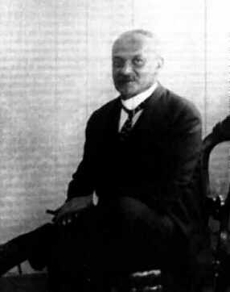

Hector Schmitz (di cui Italo Svevo è uno pseudonimo letterario) nacque a Trieste il 19 dicembre 1861. Suo padre, che svolgeva una redditizia attività di commerciante, volle avviare il figlio, quinto di nove fratelli, al medesimo mestiere.
Grazie alla buona condizione economica della famiglia, prima di studiare all'Istituto Superiore per il Commercio "Pasquale Revoltella", Ettore fu quindi mandato a studiare in collegio a Segniz, in Germania, con due dei fratelli. In quegli anni di collegio dimostrò il suo amore per la letteratura: approfondì la lettura dei classici tedeschi, quali Goethe e Schiller, ed acquistò inoltre un'ottima padronanza della lingua tedesca. Questa sarebbe stata fondamentale per leggere le opere dei grandi filosofi germanici in versione originale.
Per la formazione dello scrittore Italo Svevo sono stati quindi molto importanti sia l'estrazione sociale che gli avvenimenti della gioventù. Tra questi va ricordato il declassamento dovuto al fallimento dell'attività commerciale paterna quando Ettore aveva 19 anni. In seguito a questo avvenimento il futuro autore della Coscienza di Zeno fu costretto a trovare lavoro presso la Banca Union di Trieste. Seguirono anni bui che lo scrittore trascrisse nella vicenda di Alfonso Nitti, protagonista di Una Vita.
Come ho già ricordato, Svevo nacque a Trieste, città con un'anima italiana, ma relegata politicamente ai confini dell'impero tedesco Trieste non aveva una particolare tradizione letteraria e si ritrovava in ombra rispetto ai più vivi centri culturali italiani perché l'influsso delle innovazioni e delle avanguardie faceva sentire i suoi effetti con molto ritardo. La condizione dei letterati triestini era quindi di inferiorità rispetto al letterati italiani in generale. Trieste era inoltre città borghese che basava la sua economia sul commercio: sbocco portuale dell'impero asburgico, aveva ben poco interesse per gli scrittori od i letterati. Come notano Ara e Magris in "Trieste, Un'identità di frontiera", "Il commerciante Ettore Schmitz, che diviene lo scrittore Italo Svevo, è il caso estremo del triestino che scrive, dell'individuo che appartiene al mondo economico austriaco e che si trasferisce, nell'elaborazione fantastica, nel mondo culturale italiano. La vittoria dello spirito borghese, differita ed elusa da Svevo con una dissimulata guerriglia quotidiana di gesti e di sentimenti, si delinea sino all'ultimo come un esito inesorabile della condizione umana ed appare, a Svevo stesso, invulnerabile agli attacchi che egli le muove col suo lavoro letterario, nascosto ed imbarazzante come un vizio. Soltanto alla fine l'autore della Coscienza di Zeno si accorgerà, con esitante ed incredula felicità, di essere non già una vittima od un prodotto di quel mondo, che gli era apparso l'unico possibile, bensì un dissolvente e un distruttore di quel mondo, un suo postero. Se ne accorgerà perché saranno gli altri, famosi uomini di lettere riconosciuti come tali in tutta Europa, a dirgli quello che egli, solido ed esitante commerciante di provincia, sospetta senza osare di ammetterlo a se stesso".
Bisogna inoltre aggiungere che Svevo era di origini ebraiche, quindi già di per sé in una condizione di diversità, e che non era credente, ovvero che si trovava, per tutti gli aspetti visti finora, in una condizione che facilmente lo avrebbe condotto a mutuare una sensazione di inettitudine: la stessa che caratterizza i suoi eroi.
Proprio qui sta la grande innovazione della scrittura di Svevo: prima ancora della pubblicazione delle ricerche di Freud, egli esamina in profondità la psicologia dei suoi personaggi, arrivando a capire come la coscienza soggiaccia agli impulsi di una zona più remota e segreta. Sta in questa geniale intuizione il fondamento delle ricerche di Svevo sulla coscienza: essa diviene un labirinto di tortuosità inestricabili in cui si mescolano impulsi contraddittori, autoinganni, giustificazioni fittizie ed ambiguità.
Analizzando in particolare La Coscienza di Zeno, possiamo notare come la fabula sia poco originale, mentre ad essere nuova sia la struttura del romanzo. La voce narrante è spesso ambigua, cade in contraddizioni, racconta lo stesso episodio in modi diversi. E' insomma, come molti critici hanno evidenziato, una voce inattendibile, una coscienza che attua un processo di innocentizzazione attraverso il racconto.
Tutto ciò si riflette pure sul tempo della narrazione, che è stato definito "tempo misto". E' un tempo non facilmente definibile perché non ci sono gerarchie tra passato e presente: il passato non è immutabile perché viene continuamente modificato dal presente nel suo scorrere.
L'ambiguità della coscienza di Zeno sta proprio nel fatto che interagisce indefinitamente col tempo del romanzo modificandolo e venendone modificata a vicenda. Il racconto che leggiamo è quindi inattendibile ma ci invita a leggere tra sue righe "le tante verità e bugie ch'egli ha qui accumulate".
L'inetto Zeno è però personaggio parzialmente positivo, a differenza di quanto fosse per Alfonso Nitti ed Emilio Brentani, protagonisti di Una Vita e Senilità. Se nei primi due romanzi il narratore esterno smascherava causticamente gli autoinganni dei due protagonisti o, ironicamente, lasciava che si smascherassero da soli, il racconto in prima persona di Zeno non dà più spazio a questo tipo di intervento. E' un cambiamento meditato perché nel frattempo è mutata la considerazione di Svevo nei confronti degli inetti.
L'inetto non è più l'inadatto alla vita, ma si fa strumento conoscitivo che sfrutta la sua condizione straniata per analizzare la mentalità borghese; grazie alla sua malattia vede quanto in realtà siano gli immobili sani intorno a lui ad essere "inquinati dal veleno". Un meraviglioso esempio di questo è nella descrizione della moglie: "Io sto analizzando la sua salute, ma non ci riesco, perché mi accorgo che, analizzandola, la converto in malattia. E scrivendone, comincio a dubitare se quella salute non avesse avuto bisogno di cura o d'istruzione per guarire".
Questa, insomma, è la meravigliosa ambiguità che ha fatto della Coscienza di Zeno uno dei capisaldi della letteratura italiana, un romanzo che a buon diritto si situa accanto ai capolavori di Joyce, Beckett, Proust e Kafka come cartina al tornasole del clima culturale di inizio secolo.
Intervista alla figlia di Italo Svevo Zeno e la guerra